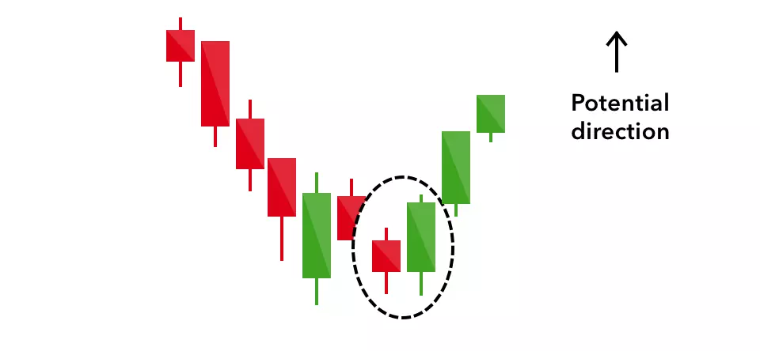
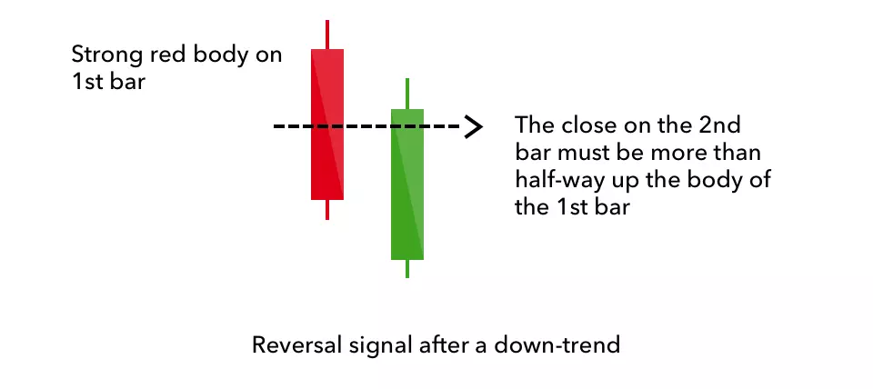
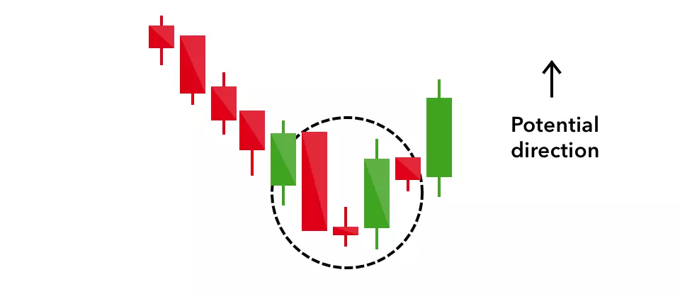
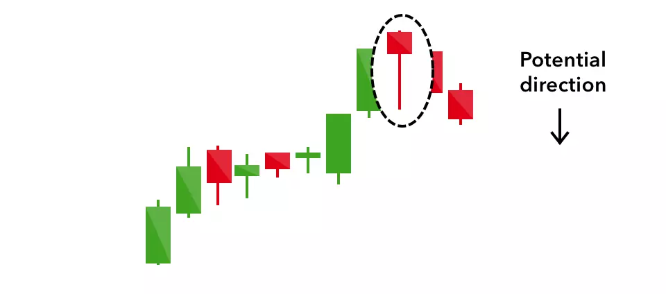
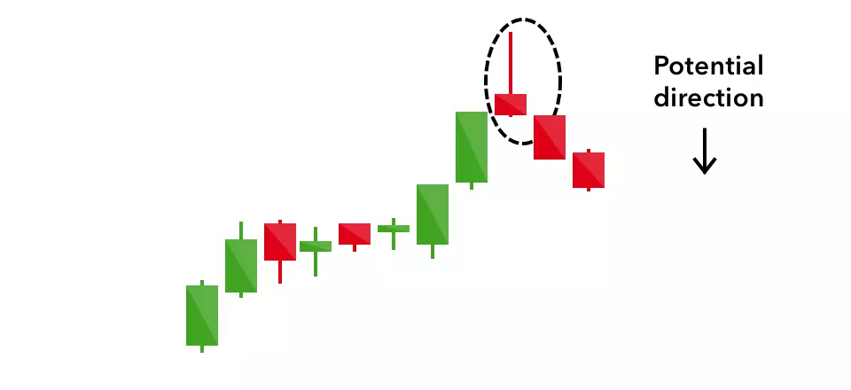

THE MOST IMPORTANT THING FOR A TRADER IS TO KNOW THE TREND OF THE MARKET
8 important candlestick patterns that every trader should know
Candlestick patterns are used to predict the future direction of price movement. Discover 8 of the most common candlestick patterns and how you can use them to identify trading opportunities.
What is a candlestick?
A candlestick is a way of displaying information about an asset’s price movement. Candlestick charts are one of the most popular components of technical analysis, enabling traders to interpret price information quickly and from just a few price bars.
This article focuses on a daily chart, wherein each candlestick details a single day’s trading. It has three basic features:
Over time, individual candlesticks form patterns that traders can use to recognise major support and resistance levels. There are a great many candlestick patterns that indicate an opportunity within a market – some provide insight into the balance between buying and selling pressures, while others identify continuation patterns or market indecision.
Before you start trading, it’s important to familiarise yourself with the basics of candlestick patterns and how they can inform your decisions.
Practise reading candlestick patterns
The best way to learn to read candlestick patterns is to practise entering and exiting trades from the signals they give. You can develop your skills in a risk-free environment by opening an IG demo account, or if you feel confident enough to start trading, you can open a live account today.
When using any candlestick pattern, it is important to remember that although they are great for quickly predicting trends, they should be used alongside other forms of technical analysis to confirm the overall trend. You can learn more about candlesticks and technical analysis with IG Academy’s online courses.
Six bullish candlestick patterns
Bullish patterns may form after a market downtrend, and signal a reversal of price movement. They are an indicator for traders to consider opening a long position to profit from any upward trajectory.
1. Hammer
The hammer candlestick pattern is formed of a short body with a long lower wick, and is found at the bottom of a downward trend.
A hammer shows that although there were selling pressures during the day, ultimately a strong buying pressure drove the price back up. The colour of the body can vary, but green hammers indicate a stronger bull market than red hammers.
2. Inverse Hammer
A similarly bullish pattern is the inverted hammer. The only difference being that the upper wick is long, while the lower wick is short.
It indicates a buying pressure, followed by a selling pressure that was not strong enough to drive the market price down. The inverse hammer suggests that buyers will soon have control of the market.
3. Bullish engulfing
The bullish engulfing pattern is formed of two candlesticks. The first candle is a short red body that is completely engulfed by a larger green candle.
Though the second day opens lower than the first, the bullish market pushes the price up, culminating in an obvious win for buyers.

4. Piercing line
The piercing line is also a two-stick pattern, made up of a long red candle, followed by a long green candle.
There is usually a significant gap down between the first candlestick’s closing price, and the green candlestick’s opening. It indicates a strong buying pressure, as the price is pushed up to or above the mid-price of the previous day.

5. Morning star
The morning star candlestick pattern is considered a sign of hope in a bleak market downtrend. It is a three-stick pattern: one short-bodied candle between a long red and a long green. Traditionally, the ‘star’ will have no overlap with the longer bodies, as the market gaps both on open and close.
It signals that the selling pressure of the first day is subsiding, and a bull market is on the horizon.

6. Three white soldiers
The three white soldiers pattern occurs over three days. It consists of consecutive long green (or white) candles with small wicks, which open and close progressively higher than the previous day.
It is a very strong bullish signal that occurs after a downtrend, and shows a steady advance of buying pressure.
Two bearish candlestick patterns Bearish candlestick patterns usually form after an uptrend, and signal a point of resistance. Heavy pessimism about the market price often causes traders to close their long positions, and open a short position to take advantage of the falling price.
1. Hanging man
The hanging man is the bearish equivalent of a hammer; it has the same shape but forms at the end of an uptrend.
It indicates that there was a significant sell-off during the day, but that buyers were able to push the price up again. The large sell-off is often seen as an indication that the bulls are losing control of the market.

2. Shooting star
The shooting star is the same shape as the inverted hammer, but is formed in an uptrend: it has a small lower body, and a long upper wick.
Usually, the market will gap slightly higher on opening and rally to an intra-day high before closing at a price just above the open – like a star falling to the ground.
